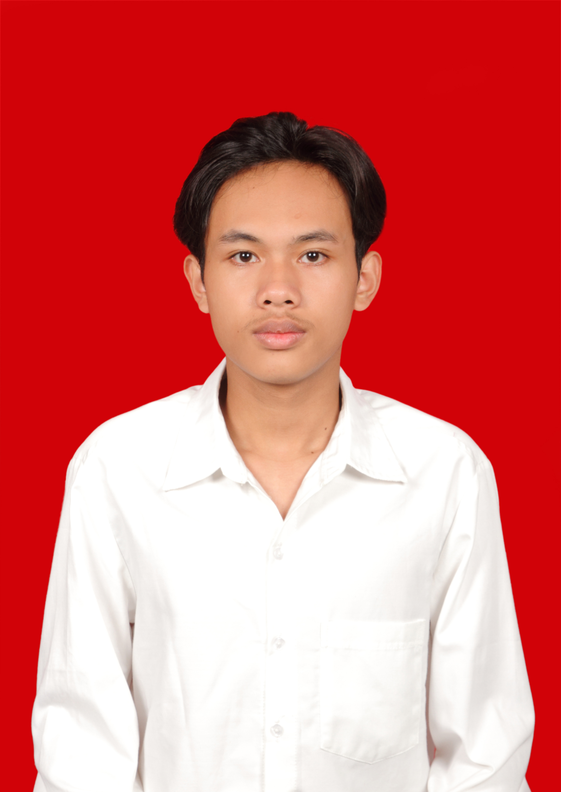

KELAS
T2G
JURUSAN / PRODI
Teknologi Informasi
DOMISILI
Malang, Jawa Timur
NIM
253140707111094
Saya adalah mahasiswa Teknologi Informasi semester 2 yang memiliki minat besar dalam dunia teknologi, khususnya pada bidang komputer, pemrograman, dan pengembangan keterampilan digital. Saat ini saya sedang fokus membangun dasar pengetahuan dan kemampuan akademik agar memiliki pemahaman yang kuat untuk jenjang pembelajaran berikutnya. Selama masa perkuliahan, saya lebih banyak memusatkan perhatian pada kegiatan akademik dan proses belajar di kelas, sehingga belum banyak mengikuti kegiatan non-akademik maupun organisasi. Namun, hal tersebut tidak mengurangi semangat saya untuk terus belajar, berkembang, dan menambah pengalaman baru. Saya dikenal sebagai pribadi yang mau belajar, bertanggung jawab, serta berusaha menyelesaikan tugas dengan baik. Ke depannya, saya ingin terus meningkatkan kemampuan di bidang Teknologi Informasi agar dapat menjadi pribadi yang kompeten, adaptif, dan siap menghadapi perkembangan dunia digital.
Dengan bekal ilmu yang saya miliki, saya berharap dapat memberikan dampak positif melalui karya-karya yang saya hasilkan. Terima kasih telah meluangkan waktu untuk membaca profil saya.